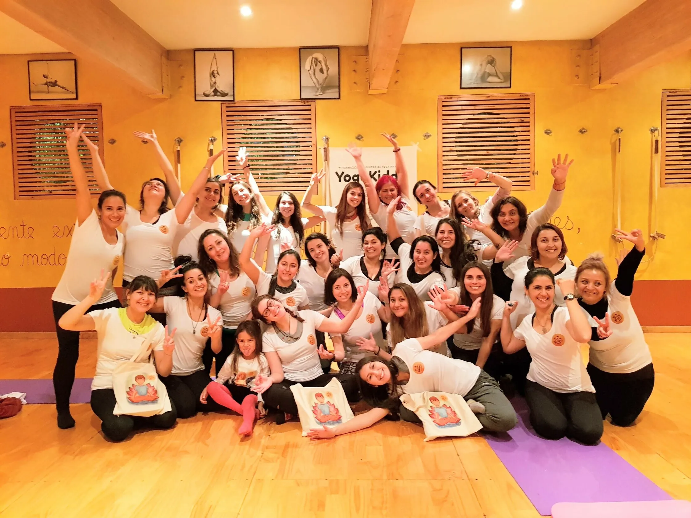

Yoga Alliance ha sido tema de conversación y discusión entre muchos instructores y estudiosos de yoga, principalmente por el asunto de la poca validez de su certificado y la forma en la que manejan dicha certificación, así que no es extraño ver como cada vez más personas e instituciones, como nosotros, desean no tener nada que ver con esta organización. Pero, ¿por qué se alejan de una organización con tanto reconocimiento y fama mundial?
Una Organización con prácticas dudosas
Comencemos con lo básico, ¿qué es Yoga Alliance y cómo funciona su certificado? Yoga Alliance es una organización de yoga internacional, sin fines de lucro, que en términos ideales debería servir como “comprobante de calidad” para los instructores y escuelas de yoga a nivel mundial. Se cree que la certificación de Yoga Alliance te otorga credibilidad y respaldo como escuela o instructor, así como diferentes “beneficios”.
El problema comienza cuando se comienzan a ver las costuras de su autenticidad. Dicha certificación se supone que es un comprobante que ratifica la experiencia y conocimiento en el mundo del yoga, pero para obtener este certificado no se siguen lineamientos particulares y no se comprueba que se cumpla con la experiencia y el conocimiento adecuado para enseñar. Eso hace que se pierda la validez y credibilidad a los ojos de instructores y escuelas experimentadas.
El examen que nadie reprueba
El certificado RYT, que viene del inglés Registered Yoga Teacher o Profesor de Yoga Certificado, así como el RYS o Escuela registrada de yoga se obtiene al cumplir 200 horas de entrenamiento en cualquier escuela registrada en la organización y pagar la tarifa de inscripción y de renovación. Para las escuelas, es necesario que al menos uno de sus directores esté certificado por la alianza.
Cabe destacar que el conocimiento y la experiencia no son comprobados para obtener dicho certificado, ya que Yoga Alliance usa un sistema basado en la confianza: con presentar una certificación que diga que cumpliste las 200 horas, basta y sobra para ellos. El problema con este sistema es que nadie comprueba si realmente cumpliste las 200 horas, lo que significa que cualquier individuo que consiga una certificación falsa (ya sea porque le pagó a una escuela de yoga o porque es amigo de algún instructor certificado) puede optar por el certificado RYT. Considerando que luego de obtener el certificado y pagado las tarifas oficialmente podrías iniciar tu propia escuela de yoga, es un fallo enorme no verificar la calidad de los profesores.
El otro requisito es cancelar las tarifas.
-
Tarifa de registro: Se cancela una única vez como tarifa de inscripción $50 USD para los instructores y $400
USD para las escuelas. - Renovación anual: se debe cancelar junto a la tarifa de registro y luego anualmente. $65 USD para los instructores y $240 USD para las escuelas.
Esto nos deja un total de $115 USD para el RYT y $640 USD para el RYS, además de las 200 horas de entrenamiento no comprobadas. Luego de esto, es necesario cancelar puntualmente la tarifa de renovación anual para poder seguir siendo parte de la alianza, es decir, si dejas de pagar, dejas de ser un “instructor certificado”, lo cual a nuestro juicio carece de coherencia.
Si realmente ya demostraste estar capacitado para dar clases ¿cómo podrías perder esa capacitación sólo por no pagar una suma de dinero anual?
O en caso de que sea necesario confirmar anualmente que el profesor o la institución continúen prestando el servicio apropiado, ¿por qué no acompañar ese requisito de las tarifas anuales con una evaluación real de las actividades que se realizan? Lo cierto es que la alianza en ningún momento se preocupa por el contenido que se imparte ni en las 200 horas de entrenamiento (si es que realmente las ejerces) ni en las clases consecuentes a la entrega de tu certificado.
La Afiliación y sus beneficios imaginarios
Sinceramente, los beneficios que se pueden obtener de Yoga Alliance no son tan grandes como pareciera:
- No estar certificado no te impide obtener todo el conocimiento y la experiencia necesaria para dictar clases de yoga, así como tampoco impide dirigir una escuela de yoga.
- Las grandes escuelas de yoga no están interesadas en la certificación, ya que, como nosotros, valoran más la experiencia que un documento que diga que estás apto para enseñar.
- Muchos de los grandes maestros de yoga, con más de 20 o 30 años de experiencia, no están certificados por la alianza, así que no es un requisito indispensable.
- Ofrecen “Abogar para proteger a la comunidad del yoga de patentes, impuestos o regulaciones gubernamentales injustas o innecesariamente complicadas”, pero no se evidencia caso alguno en que en realidad lo hayan hecho.
Cuando las escuelas de yoga no solicitan la certificación de la Yoga Alliance muchos de los grandes instructores no caen en la contrariedad de certificarse, y aun así logran repartir su conocimiento. Si pagar una tarifa anual es lo único que acredita a cualquiera para mantener su título de “validez”, no vemos por qué podría valer la pena intentar sacar el certificado.
Misiones y Visiones Opuestas
Tomando en cuenta los puntos anteriores, claramente se puede ver que Yoga Alliance no se preocupa por la calidad de los instructores y escuelas que conforman la alianza, y le otorga más valor al dinero que tengas que a la experiencia. Esto va en contra de nuestra visión del yoga y de lo que impartimos diariamente. Nosotros valoramos la experiencia por sobre todas las cosas.
En el sitio web de Yoga Alliance podrás leer que uno de sus puntos clave, en la sección de misión, es “Guiar a los profesores de yoga y a las escuelas para que logren el éxito con prácticas empresariales conscientes y efectivas.”, donde nuevamente se evidencia que su gestión está orientada al lucro en lugar de la experiencia.
Amor, respiración, compasión y experiencia como verdaderas herramientas para el Yoga
Un certificado de la Yoga Alliance no te hará apto para comenzar a enseñar, así como carecer de dicho certificado no te deja incapaz de hacerlo. El yoga va más allá del dinero y de lo que diga tal documento, ya que al momento de la verdad, el conocimiento, la experiencia y la destreza física de los instructores y sus estudiantes serán la verdadera evidencia.
Lamentablemente, a diario más y más personas no capacitadas y sin interés en crecer como yogi obtienen una certificación de la Yoga Alliance, lo que crea una deficiencia en la enseñanza e incluso puede llegar a desanimar a futuros yogis de continuar en este estilo de vida. Por este motivo, nos encargamos de dar prioridad a la experiencia, la constancia y el conocimiento adquirido de los futuros instructores de yoga.
Te invitamos a verificar la calidad de nuestras clases e instructores a través de la sección “quienes somos” y “blog” de este portal web, donde te contamos la historia de cómo se fundó nuestra institución, te presentamos a nuestro equipo de aplicados instructores y compartimos contigo algunas de las variadas experiencias de colaboración entre nuestra institución y otros colegios, profesores y terapeutas. Y por supuesto, ¿qué mejor prueba de nuestro potencial que participar en nuestras clases? ¡Anímate!
Mientras Yoga Alliance sigue exigiendo sus tarifas y certificando a muchas personas sin ofrecer nada a cambio, nosotros seguimos practicando y tratando de superarnos día a día para garantizarte una experiencia grata y de la más alta calidad, y así demostrarte que muy a pesar de que los profesores y las instituciones necesiten un financiamiento para continuar su labor, el verdadero objetivo del yoga es el amor, la respiración y la compasión, no el dinero.